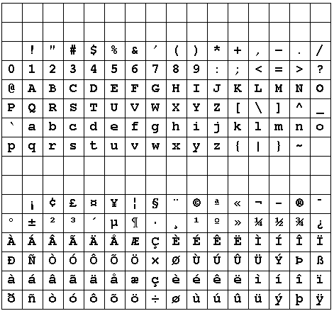

Part 1 (Ogg-Vorbis format)
Part 1 (WAV format)
Part 2 (Ogg-Vorbis format)
Part 2 (WAV format)
Part 1 (Ogg-Vorbis format)
Part 1 (WAV format)
Part 2 (Ogg-Vorbis format)
Part 2 (WAV format)
|
Part 1 (Ogg-Vorbis format)
|
Part 1 (WAV format)
|
|
Part 2 (Ogg-Vorbis format)
|
Part 2 (WAV format)
|
Each side should ideally be able to understand messages for its own version and all earlier ones. It should be able to write replies to old style queries in old style response format.
The ability to talk earlier version formats may be lost if the protocol changes too much. In this case, you need to be able to ensure that no copies of the earlier version still exist (imposible, of course...).
Part of the protocol setup should involve version information.
The Web is a good example of a system that is messed up by different
versions. The protocol has been through two versions, and most
servers/browsers use the later version.
The version is given in each request
GET / HTTP/1.0
But the content of the messages has been through a large number of versions:
JNLP (Java Network Launching Protocol) is one attempt to overcome version problems. A fixed browser-side helper will manage all documents of type JNLP (ending in .jnlp). A document of this type contains version information of the Java classes used by a Java application.
Messages are sent across the network as a sequence of bytes, which has no structure except for a linear stream of bytes. Programming languages use structured data such as
For example, sending the following variable length table of two columns of variable length strings:
fred programmer
liping analyst
sureerat manager
3
4 fred
10 programmer
6 liping
7 analyst
8 sureerat
7 manager
Variable length things can alternatively have their length indicated
by terminating them with an "illegal" value, such as '\0' for
strings:
3
fred\0
programmer\0
liping\0
analyst\0
sureerat\0
manager\0
To send the same data as a 3-row fixed table of two columns of
strings of length 8 and 10 respectively:
fred\0\0\0\0
programmer
liping\0\0
analyst\0\0\0
sureerat
manager\0\0\0
Java classes can be marked as implementing the interface
Serializable. This interface has no methods, so
no extra code has to be written for Serializable
classes.
If a class is Serializable, then the methods
ObjectOutputStream.writeObject() and
ObjectInputStream.readObject() can be called.
This allows an object (and all objects it references) to be
written out (e.g. to a file) and then read back and retored.
This can be used to save and restore objects, to make them persistent.
If the client and server are both Java applications, then objects in one JVM can be written out to the other JVM. i.e. this gives mobile objects. This is used by e.g. RMI (Remote Method Invocation). It cannot be used for general client/server applications, because a C/Perl/Ada etc program does not understand Java objects.
The client and server will exchange messages with different meanings. e.g. Login request, get record request, login reply, record data reply. The client will prepare a request which must be understood by the server. The server will prepare a reply which must be understood by the client.
Usually, the first part of the message will be a message type.
LOGIN name passwd
GET cpe4001 grade
LOGIN succeeded
GRADE cpe4001 D
The message types can be strings or integers. e.g. HTTPD uses integers such as 404 to mean "not found". The messages from client to server and vice versa are disjoint: "LOGIN" from client to server is different to "LOGIN" from server to client.
The advantages are compactness and hence speed. The disadvantages are caused by the opaqueness of the data: it may be harder to spot errors, harder to debug, require special purpose decoding functions.
Pseudocode for a byte-format server is
handleSocket() {
while (true) {
byte b = in.readByte()
switch (b) {
case MSG_1: ...
case MSG_2: ...
...
}
}
}
The Java classes to use for this representation are
DataInputStream DataOutputStream
To write an array of four int's:
int[] a = new int[...];
DataOutputStream out = new DataOutputStream(...)
out.writeByte(4);
for (int n = 0; n < 4; n++)
out.writeInt(a[n]);
To read them in
byte size = in.readByte();
int[] a = new int[size];
for (byte n = 0; n < size; n++)
in.readInt(a[n]);
Java does not support unsigned data types such as unsigned int or unsigned long. These can only be handled by reading them as signed, and then if they are negative converting them to the next size up and adding the max value of the original type. This can be done by
int DataInput.Stream.readUnsignedByte() int DataInput.Stream.readUnsignedShort()unsigned int,
long n = in.readInt();
if (n < 0)
n += Integer.MAX_VALUE;
unsigned long, use BigIntegerThe start of the message is typically a line that represents the message type. String handling functions may be used to decode this. Successive lines contain the data. Line-oriented functions and line-oriented conventions are used to manage this. For example, an array of longs may be sent as one string per line, terminated by a blank line.
Pseudocode is
handleSocket() {
line = in.readLine()
if (line.startsWith(...) {
...
} else if (line.startsWith(...) {
...
}
}
Character formats are easier to setup, easier to debug, but carry higher overheads: plus other problems.
The standard 7-bit character sets are EBCDIC and ASCII. The Internet
tends to expect ASCII because of its Unix origin. EBCDIC characters would
need to be converted before being put on the wire. The Unix program
dd
may be useful for this.
The "standard" ASCII set allows some variations: characters such as `[' are not required to be present and may be substituted for others. The ISO 646 character set is a subset of full ASCII and is totally portable.
The European character sets are 8-bit sets.
The first 128 characters (the 7-bit subset) are the same as ASCII.
The top 128 bits represent additional European characters.
These vary across the
continent. The most common set is ISO8859-1, covering Western Europe

ISO8859-2 etc, cover other European regions plus Russia, Israel, etc.
The classes to use for ASCII and ISO 8859 are
PrintStream BufferedReader.readLine()Character methods such as isAplha()
work okay with ISO 8859
The PrintStream methods write Java characters
and strings in 8-bit format.
BufferedReader.readLine() reads 8-bit characters
into a Java string.
In Unix, the newline character is '\n'. In MSDOS, it is the pair "\r\n". Text files in Unix need to be converted in order to be read properly by MSDOS, and vice versa.
Programs that write lines may be different:
out.print("abcd\n"); // Unix
out.print("abcd\r\n"); //MSDOS
There is a system property line.separator which is
different for Unix and MSDOS
String separator = System.getProperty("line.separator");
The PrintStream.println(...) methods use this separator,
so they write text files correctly under Unix and MSDOS.
A pair of applications could agree
to use either '\n' or "\r\n".
The Internet RFC 822 "Standard for the format of ARPA Internet text
messages" uses
the pair "\r\n".
This standard is used by e.g. HTTP and MIME.
So Java applications using println(...)
print("...\r\n");
BufferedReader.readLine() will use any of '\r', '\n'
or a combination to signal end of line.
Many Asian languages are based on hieroglyphics. They require 16-bit
character coding
Unicode is the principal encoding at the moment. It is a pure 16-bit code,
large enough to cover all existing languages.
Java uses Unicode internally. When writing/reading these as 8-bit characters,
the PrintStream methods and BufferedReader.readLine()
need to be used. These ignore the top 8 bits of the character, so will get
these extra characters wrong.
If the exchange protocol uses Unicode, then there are Java methods to read and write Unicode:
DataOutputStream.writeChar(int ch)
writes the Unicode character as two bytes
DataOutputStream.writeChars(String s)
writes the string as a sequence of 2-byte chars, with
no length indicator or string terminator
DataOutputStream.writeUTF(String s)
writes the length and then the string in Unicode Text Format
char DataInputStream.readChar() String DataInputStream.readChars() String DataInputStream.readUTF() readUTF()/writeUTF() methods use only a subset
of possible UTF formats.
It is better to use an InputStreamReader and OutputStreamReader
with the constructor that takes an encoding as parameter. This gets encodings
such as UTF-8 and UTF-16 correct.
Unicode is not quite large enough. It encodes Asian languages because it treats some Chinese, Japanese and Korean characters as though they were the same. This is okay unless you have a mixed language document containing both Chinese and Japanese. You won't always be able to tell when a character belongs to a particular language
ISO 10646 is a 32-bit character set. It is large enough for all known characters sets, including Egyptian hieroglyphs, Klingon and other unknown languages. There is no support for ISO 10646 in any common programming langauges.
A file transfer protocol - not as complex as the real FTP, or even TFTP. This is a complete worked example of creating all components of a client-server application. It is a simple version of a file transfer program which includes messages in both directions, as well as design of messaging protocol.
Look at a simple non-client-server program that allows you to list files
in a directory, change directory and copy files. The pseudo-code would be
For simplicity, all filenames and file contents will be assumed to be
in 7-bit ASCII.
In a CS situtation, the client would be at the user end, talking to a server
somewhere else. Aspects of this program belong solely at the presentation
end, such as getting the commands from the user. Some is messages from the
client to the server, some is at the server end.
read line from user
while not eof do
if line == dir
list directory
else
if line == cd <dir>
change directory
if succesful
print new directory name
else
complain
else
if line == copy <file>
if the file can be read
copy file
else complain
else
if line == quit
quit
else
complain
read line from user
For a simple file transfer, assume that all files are at the server end, and we are only transferring ASCII files from the server to the client. The transferred file is to have the same name as the original file. The client side (including presentation aspects) will become
read line from user
while not eof do
if line == dir
list directory
else
if line == cd <dir>
change directory
if succesful
print new directory name
else
complain
else
if line == copy <file>
if the file can be read
copy file
else
complain
else
if line == quit
quit
else
complain
read line from user
where the italicised lines involve communication with the server.
change dir button:
if there is a selected file
change directory
if successful
update directory label
list directory
update directory list
get file button:
if there is a selected file
copy file
| client request | server response |
|---|---|
| dir | send list of files |
| cd <dir> | change dir send error if failed send newdir if succeed |
| get <file> | the file can be read send error if failed send file if succeed |
| quit | quit |
Message format:
| client request | server response |
|---|---|
| send "DIR" | send list of files, one per line terminated by a blank line |
| send "CD <dir>" | change dir send "ERROR" if failed send "SUCCEEDED" + new directory name if succeed |
| send "GET <file>" | the file can be read send "ERROR" if failed if succeed, send contents of ASCII file prefixed by the number of lines |
| send "QUIT" | close connection |
Common definitions used by both client and server
/**
* FileTransferTextConstants.java
*/
public class FileTransferTextConstants {
public static final String CD = "CD";
public static final String DIR = "DIR";
public static final String GET = "GET";
public static final String ERROR = "ERROR";
public static final String SUCCEEDED = "SUCCEEDED";
public static final String QUIT = "QUIT";
public static final int PORT = 18889;
public static final String CR_LF = "\r\n";
}// FileTransferTextConstants
/**
* FileTransferTextServer.java
*/
/**
* WARNING: the following code is okay as procedural code
* but it sucks as O/O code
*/
import java.io.*;
import java.net.*;
public class FileTransferTextServer {
public static void main(String argv[]) {
ServerSocket s = null;
try {
s = new ServerSocket(FileTransferTextConstants.PORT);
} catch(IOException e) {
System.out.println(e);
System.exit(1);
}
while (true) {
Socket incoming = null;
try {
incoming = s.accept();
} catch(IOException e) {
System.out.println(e);
continue;
}
new SocketHandler(incoming).start();
}
}
}
class SocketHandler extends Thread {
Socket incoming;
File clientDir = new File(".");
BufferedReader reader;
PrintStream out;
SocketHandler(Socket incoming) {
this.incoming = incoming;
}
public void run() {
try {
reader = new BufferedReader(new InputStreamReader(
incoming.getInputStream()));
out = new PrintStream(incoming.getOutputStream());
while (true) {
String line = reader.readLine();
if (line == null) {
break;
}
if (line.startsWith(FileTransferTextConstants.CD)) {
changeDirRequest(losePrefix(line,
FileTransferTextConstants.CD));
} else if (line.startsWith(FileTransferTextConstants.DIR)) {
directoryRequest();
} else if (line.startsWith(FileTransferTextConstants.GET)) {
// code omitted
} else if (line.startsWith(FileTransferTextConstants.QUIT)) {
break;
} else {
out.print(FileTransferTextConstants.ERROR +
FileTransferTextConstants.CR_LF);
}
}
incoming.close();
} catch(IOException e) {
e.printStackTrace();
}
}
/**
* Given that the string starts with the prefix,
* get rid of the prefix and any following whitespace
*/
public String losePrefix(String str, String prefix) {
int index = prefix.length();
String ret = str.substring(index).trim();
return ret;
}
public void changeDirRequest(String dir) {
File newDir = new File(clientDir, dir);
if (newDir.isDirectory()) {
out.print(FileTransferTextConstants.SUCCEEDED +
FileTransferTextConstants.CR_LF);
clientDir = newDir;
} else {
out.print(FileTransferTextConstants.ERROR +
FileTransferTextConstants.CR_LF);
}
try {
System.out.println("New dir for client is " +
clientDir.getCanonicalPath());
} catch(IOException e) {
e.printStackTrace();
}
}
public void directoryRequest() {
String[] fileNames = clientDir.list();
if (fileNames == null) {
out.print(FileTransferTextConstants.ERROR +
FileTransferTextConstants.CR_LF);
}
for (int n = 0; n < fileNames.length; n++) {
out.print(fileNames[n] +
FileTransferTextConstants.CR_LF);
}
out.print(FileTransferTextConstants.CR_LF);
}
}
/**
* FileTransferTextClient.java
*/
/**
* WARNING: the following code is okay as procedural code
* but it sucks as O/O code
*/
import java.io.*;
import java.net.*;
public class FileTransferTextClient {
protected Socket sock;
protected BufferedReader reader;
protected BufferedReader console;
protected PrintStream writer;
public static void main(String[] args){
if (args.length != 1) {
System.err.println("Usage: Client address");
System.exit(1);
}
new FileTransferTextClient(args[0]);
}
public FileTransferTextClient(String server) {
InetAddress address = null;
try {
address = InetAddress.getByName(server);
} catch(UnknownHostException e) {
e.printStackTrace();
System.exit(2);
}
sock = null;
InputStream in = null;
OutputStream out = null;
try {
sock = new Socket(address, FileTransferTextConstants.PORT);
in = sock.getInputStream();
out = sock.getOutputStream();
} catch(IOException e) {
e.printStackTrace();
System.exit(3);
}
reader = new BufferedReader(new InputStreamReader(in));
writer = new PrintStream(out);
console = new BufferedReader(new InputStreamReader(System.in));
while (true) {
String line = null;
try {
System.out.print("Enter request: ");
line = console.readLine();
System.out.println("Request was " + line);
} catch(IOException e) {
e.printStackTrace();
exit();
}
if (line.equals(FileTransferTextConstants.DIR)) {
directoryRequest();
} else if (line.startsWith(FileTransferTextConstants.CD)) {
changeDirRequest(losePrefix(line,
FileTransferTextConstants.CD));
} else if (line.startsWith(FileTransferTextConstants.GET)) {
getFileRequest(losePrefix(line,
FileTransferTextConstants.GET));
} else if (line.equals("QUIT")) {
exit();
} else {
System.out.println("Unrecognised command");
}
}
}
/**
* Given that the string starts with the prefix,
* get rid of the prefix and any whitespace
*/
public String losePrefix(String str, String prefix) {
int index = prefix.length();
String ret = str.substring(index).trim();
return ret;
}
public void exit() {
try {
writer.print(FileTransferTextConstants.QUIT +
FileTransferTextConstants.CR_LF);
reader.close();
writer.close();
sock.close();
} catch(Exception e) {
e.printStackTrace();
}
System.exit(0);
}
public void directoryRequest() {
// code omitted
}
public void changeDirRequest(String dir) {
writer.print(FileTransferTextConstants.CD + " " + dir +
FileTransferTextConstants.CR_LF);
String response = null;
try {
response = reader.readLine();
} catch (IOException e) {
e.printStackTrace();
return;
}
if (response.equals(FileTransferTextConstants.ERROR)) {
System.out.println("Error in DIR request");
} else if (response.startsWith(FileTransferTextConstants.SUCCEEDED)) {
System.out.println("Changed dir");
} else {
System.out.println("Illegal response from server" +
response);
}
}
public void getFileRequest(String filename) {
// code omitted
}
} // FileTransferTextClient
D. H. Crocker Standard for the Format of ARPA Internet Text Messages IETF RFC 822
The IETF RFC's may be obtained from ftp://ietf.org/internet-drafts/ or http://www.garlic.com/~lynn/rfcietf.htm